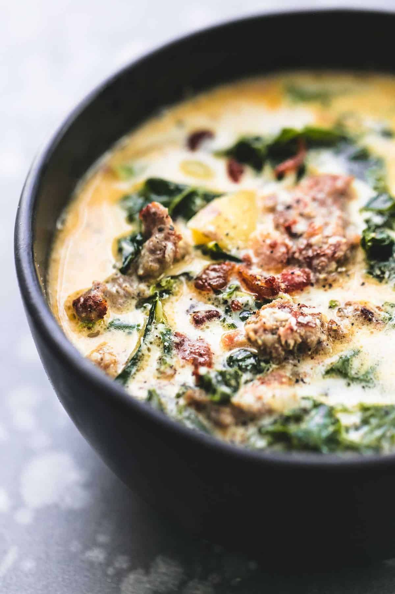

Description
Feast your eyes on this, baby!
This soup is off the hook and kickin Olive Gardens butt!
If I was stranded on a desert island and could only eat one thing, it'd be this soup m'kay
Give it a shot, or you'll regret it!
Ingredients
- 1 pound spicy Italian ground sausage use mild for kid-friendly
- 4 tablespoons butter
- ½ white onion diced
- 1 tablespoon garlic minced
- 6 cups chicken broth
- 2 cups water
- 4-5 yellow potatoes cut into 1-inch pieces
- 3 teaspoons salt or to taste
- 1 teaspoon black pepper or to taste
- 2 cups heavy cream
- 4 cups kalechopped
- chopped bacon or bacon bits and grated parmesan cheese for topping optional
Steps
- In a large pot saute sausage 5-6 minutes until browned.
Use a slotted spoon to transfer sausage to a plate and set aside.
- In the same pot, add butter and saute onions over medium heat
until translucent. Add garlic and saute for another minute until fragrant.
- Add chicken broth, water, potatoes, salt, and pepper and bring to a boil.
Boil until potatoes are tender. Stir in kale, and heavy cream. Add sausage.
Taste and add salt and pepper if needed. Serve garnished with grated parmesan
cheese and/or bacon if desired.